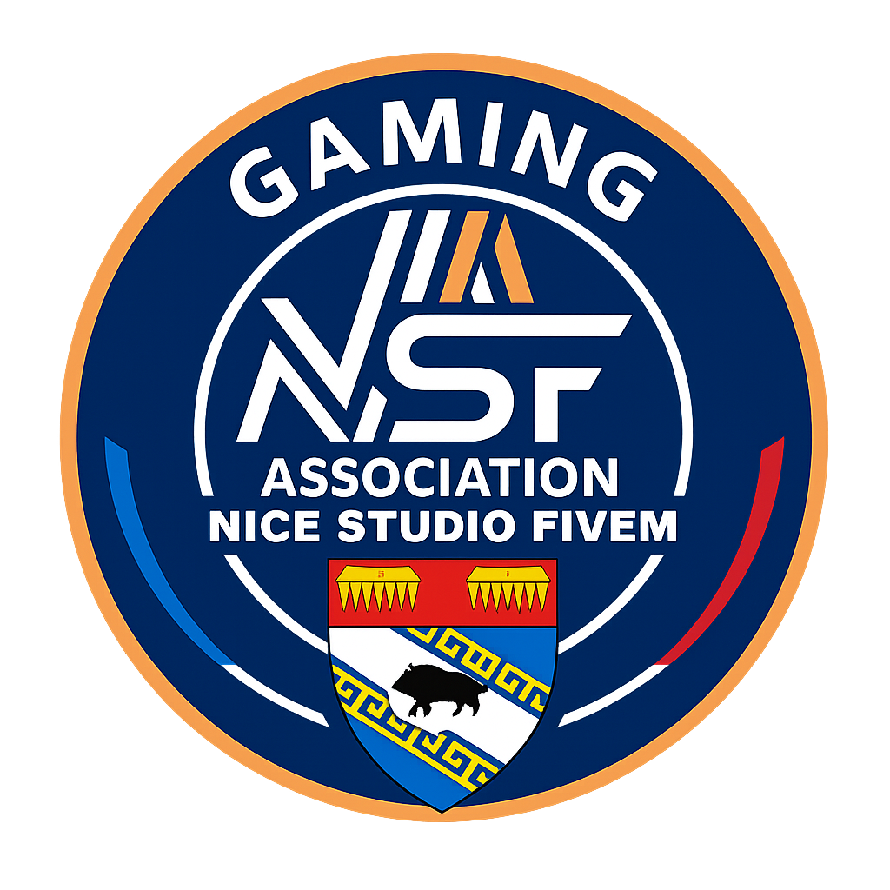

Nos Partenaires Officiels
Découvrez nos partenaires qui soutiennent FarmOtor’s Transport et partagent notre passion du transport et de la simulation !
🚜 FARMOTOR’S TRANSPORT
Communauté de passionnés de simulation agricole et de transport virtuel. Organisation d’événements, convoi et projets immersifs.

🏢 NICE STUDIO FIVEM
Développement, hébergement et création d’expériences immersives sur FiveM. Un partenaire de confiance pour l’innovation virtuelle.